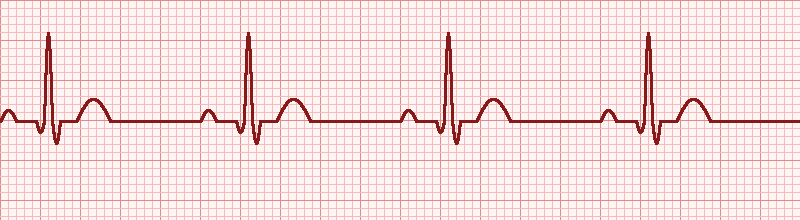
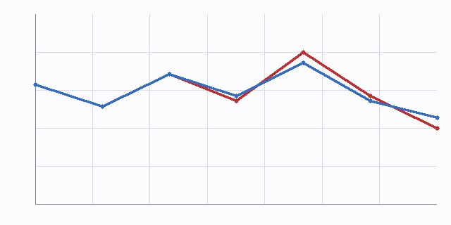

Patient demographics
Patient name
Reyes, Marcus J.
Preferred: "Marc"
MRN
MR-04812-26
Maroto Health ID
Date of birth · Age
1972-08-14 · 53 y
Sex: Male
Insurance
BlueCare Premier
Policy #BC-77821-3
Referring clinician
Dr. A. Patel, GP
Bayview Family Clinic
Blood pressure
138 / 88
↑ stage 1 hypertensionHeart rate
82 bpm
within normal rangeBMI
28.7
overweightSpO₂
97%
normalTemperature
36.8°C
afebrileChief complaint & history of present illness
Chief complaint: Episodic central chest pressure with mild shortness of breath, worse on exertion. Onset approximately 6 weeks ago, increasing in frequency over the past 10 days.
Patient describes a substernal pressure-like sensation, non-radiating, lasting 5–10 minutes, reproducibly triggered by climbing two flights of stairs or carrying groceries. Pain resolves with rest within 10 minutes. No associated diaphoresis, nausea, or palpitations. No syncope. Sleep is undisturbed. No recent infections or fevers.
Risk factor screening (modified WHO ROSE questionnaire)
Have you ever had pain or discomfort in your chest?
YES Patient confirms pressure-like episodes on exertion, see HPI above.
Does it ever make you stop walking?
YES "I have to slow down and lean on something for a minute."
Does the pain go away when you stand still?
YES Resolves within 5–10 minutes of rest.
Where do you feel the discomfort?
Substernal · non-radiating · no jaw / arm involvement.
Do you currently smoke tobacco?
NO Quit 8 years ago. Prior 15 pack-year history (15 cigs/day × 22 years).
Have you been told you have diabetes?
PRE-DIABETIC HbA1c 6.1% in 2025. Not on metformin.
Are you being treated for high blood pressure?
YES Lisinopril 10 mg daily since 2023.
First-degree relative with early cardiac disease?
YES Father MI at age 54. Brother CABG at age 58.
Composite risk profile
Framingham 10-year CVD risk estimate: 17.4% (high). ASCVD pooled cohort risk: 15.8%. Recommend statin initiation per ACC/AHA 2018 guidelines.
Current medications & allergies
Active medications
| Drug | Dose | Freq | Since |
|---|---|---|---|
| Lisinopril | 10 mg | QD | 2023-02 |
| Atorvastatin | 20 mg | QHS | 2024-09 |
| Aspirin (low-dose) | 81 mg | QD | 2024-12 |
| Vitamin D₃ | 1000 IU | QD | 2022-01 |
Allergies & intolerances
| Agent | Reaction | Severity |
|---|---|---|
| Penicillin | Urticaria | Severe |
| Shellfish | Lip swelling | Mild |
| Latex | Contact rash | Mild |
Imaging & diagnostic studies
Cardiothoracic ratio 0.51 — borderline
Mild cardiomegaly, no consolidation, lung fields clear. No pleural effusion. Mediastinum not widened.
NSR 78 bpm · borderline LVH

Normal sinus rhythm. Mild voltage criteria for left ventricular hypertrophy. No ST elevation, no Q waves.
Home vitals trend — last 7 days

● Systolic BP (mmHg, scale 110–145) ● Heart rate (bpm, scale 60–95)
Laboratory results (drawn 2026-05-20)
| Analyte | Result | Unit | Reference range | Flag |
|---|---|---|---|---|
| Total cholesterol | 224 | mg/dL | < 200 | HIGH |
| LDL cholesterol | 148 | mg/dL | < 100 | HIGH |
| HDL cholesterol | 38 | mg/dL | > 40 | LOW |
| Triglycerides | 192 | mg/dL | < 150 | HIGH |
| HbA1c | 6.1 | % | < 5.7 | HIGH |
| Fasting glucose | 108 | mg/dL | 70–99 | HIGH |
| Creatinine | 0.94 | mg/dL | 0.7–1.3 | OK |
| eGFR | 92 | mL/min | > 60 | OK |
| hs-Troponin I | 8 | ng/L | < 19 | OK |
| BNP | 42 | pg/mL | < 100 | OK |
Assessment & impression
Primary: Probable stable angina pectoris (exertional class II). Multifactorial cardiovascular risk profile dominated by family history, dyslipidemia, and uncontrolled hypertension.
Secondary considerations: Pre-diabetes mellitus (HbA1c 6.1%); overweight (BMI 28.7); borderline LVH on ECG; mild cardiomegaly on CXR — likely chronic hypertensive remodelling.
Reassuring findings: Negative high-sensitivity troponin and BNP — acute coronary syndrome not currently active. Renal function preserved.
Recommended plan
- Confirm ischemia. Schedule exercise stress test with myocardial perfusion imaging within 14 days. If positive or equivocal, proceed to coronary CT angiography.
- Optimize antihypertensive therapy. Increase lisinopril to 20 mg QD; recheck BP in 4 weeks. Add amlodipine 5 mg if SBP > 135 at follow-up.
- Intensify lipid therapy. Atorvastatin 40 mg QHS. Repeat full lipid panel in 8 weeks. Discuss PCSK9 inhibitor if LDL > 100 at recheck.
- Lifestyle counselling. Mediterranean diet referral to nutrition. Goal: 5% body weight loss over 6 months. Continue 30-min walks 5×/week.
- Pre-diabetes management. Recheck HbA1c in 3 months. Refer to diabetes prevention program.
- Patient safety net. Provide chest-pain action card with symptom thresholds for ER presentation. Sublingual nitroglycerin 0.4 mg SL PRN, max ×3 with 5-min interval.
- Follow-up cardiology visit. In 6 weeks (post stress test & lipid recheck).
Clinician statement
I have personally reviewed the history, examined the patient, and discussed the assessment and recommended plan. Patient demonstrated understanding (teach-back verified) and consented to the proposed investigations.
Report prepared automatically from the Maroto Anamnesis questionnaire and finalised by the attending clinician at 2026-05-20 11:02 PT. Document checksum: 6f9e83…b4c1.
Attending physician
Dr. Helena Costa, MD
Board-certified Cardiologist
NPI 1235647890
License #MD-CA-082114
Confidential medical record. This document contains protected health information subject to applicable privacy laws (HIPAA, GDPR). Unauthorised disclosure, copying or distribution is prohibited. If received in error, please destroy and notify records@maroto.example. Findings reflect a single point-in-time clinical encounter; treatment decisions remain the responsibility of the patient's clinical team.